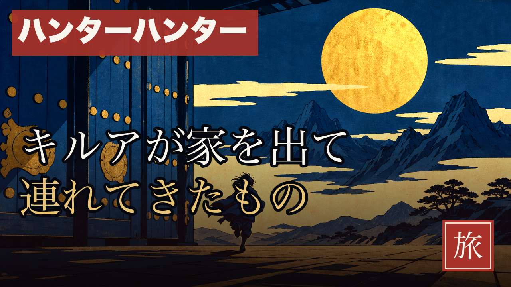
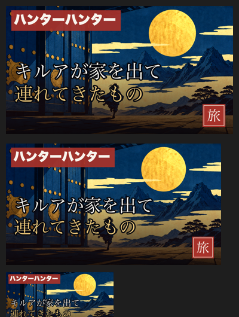

essay-episode Step9 ・ Tier Aサムネ（CTRの律速）
第34話 サムネ案
確定タイトルから題字を起こしました。無名小chの律速＝サムネ＝入口。実寸で読めるかを最優先。

フル（1280×720）。タグ「ハンターハンター」赤／問い「キルアが家を出て／連れてきたもの」／卦バッジ「旅」。

↑ フィード実寸（380 / 360 / 180px）。180pxでも問い文字が読めることを確認。
設計（Tier A）：①作品名タグ（赤・上部）②問い型コピー＝「連れてきたもの」で余白を残す（何を?＝針を視聴者に埋めさせる・タイトルと同じ"言い切らない"方針）③門＝家を出るキルア＋金の月アンカー ④卦バッジ「旅」。
ベース選定：藍墨で暗い門の構図（A09）を採用＝コピーが地に埋もれず180pxで読める（金の陽が明るいA28や忙しいA12は文字が沈むため不採用）。
| 要素 | 内容 |
|---|
| タグ | ハンターハンター（赤・検索の旗） |
| 問い | キルアが家を出て／連れてきたもの（余白型） |
| 卦バッジ | 旅 |
| 可読性 | 180pxで問い読める ✅ |
👉 このサムネでよいですか？
A承認 → 概要欄・ショート2本・TikTokへ進む
B問いを変える（例「逃げたのに、消えないもの」等）
Cベース画像/主役の大きさを変える（門でなく針の人影を大きく等）
承認後：概要欄→ショート2本（幕4刃＋冒頭Hook）→TikTok縦＋カバーを作り切ってから、まとめてご承認いただきます（アップはまだ）。